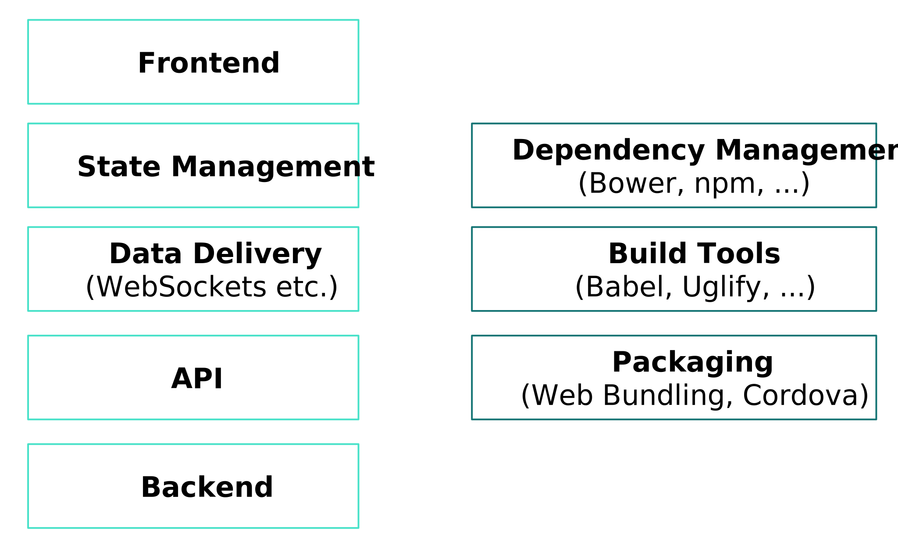
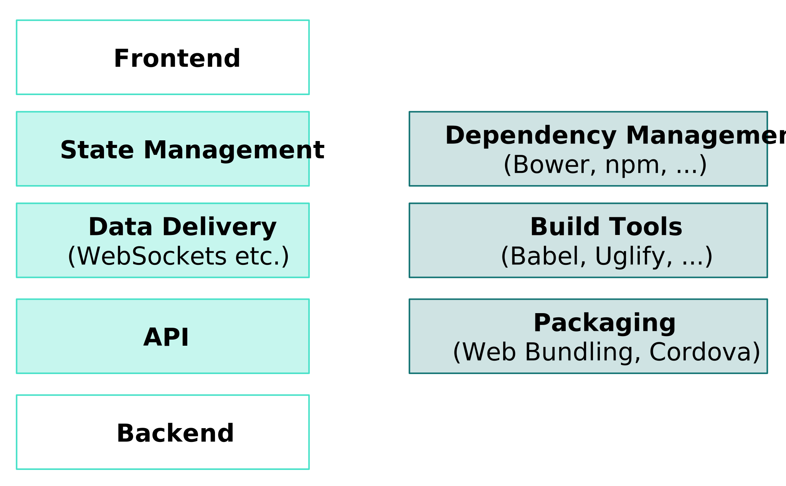

name: cover <img src="assets/img/peerigon.svg" style="width: 30%; margin-top: 7%; margin-bottom: -7%;"> # Meteor for Dummies ## The 1.3 Recap .slide-author[ Carsten Meier<br> .small[carsten.meier@peerigon.com] ] --- layout: true class: center, middle .slide-header-left[ Meteor for Dummies ] .slide-header-right[ Web&Wine ] --- ## Carsten Meier - Frontend Developer at Peerigon - Passion for Mobile & IoT - Open Source Developer --- <img src="assets/img/peerigon.svg" style="width: 50%; margin-bottom: 5%;"/> - We do JavaScript - Open Web! --- ## Agenda - What is Meteor about - The Ecosystem - The Past - Common Misconceptions - Why 1.3 rocks - The Future --- ## What is Meteor about "The JavaScript App Platform" --- ### It Really is a Platform!  --- ### Meteor makes stuff easy for you by abstraction  --- All it takes is a single command to install all of it! ```bash curl https://install.meteor.com/ | sh ``` <video src="assets/video/what.mp4" autoplay loop muted /> --- ### What? and How? (Full Stack / 1) - Universal JavaScript WebApps - Data exchange via DDP (Distributed Data Protocol) over WebSockets - Open protocol, keeps your data in sync - Supports Remote Procedure Calls (RPC) - Publish/subscribe model - Built-in latency compensation and conflict resolution --- ### What? and How? (Full Stack / 2) - Unified database API on server and client - MongoDB and MiniMongo - State management by reactivity - If a data source changes, the affected code is rerun automattically - Works on client and server! --- ### What? and How? (Toolchain) - All goodies work out of the box - Babel, Uglify, NPM, bundling - HTTP server, automatic rebuild/reload - Cordova (1-click export for Android & iOS) --- ### Now is that cool or what? <video src="assets/video/ohmygod.mp4" autoplay loop muted /> --- ### What can (or should) I use it for - Highly interactive WebApps - Rapid prototyping - Mobile apps --- ## The Meteor Ecosystem --- ### Ecosystem - Atmosphere.js - Package management (like NPM) - Meteor Galaxy - Cloud hosting --- ## Meteor: the past ### or: the errors of our youth <video src="assets/video/oops.mp4" autoplay loop muted /> --- ### Meteor: the past Meteor tried to solve *everything* --- ### Meteor: the past The ecosystem could not keep up with the rest<br/>(esp. NPM) --- ### Meteor: the past Development was not fast enough,<br/> they got overrun by Babel, React & Webpack --- ## Common Misconceptions --- ### Common Misconceptions - I can only integrate packages from Atmosphere.js - 1.3 brings NPM support via import --- ### Common Misconceptions - I need to use Blaze - You can use any frontend framework you want - Meteor integrates well with React, Angular, Vue --- ### Common Misconceptions - I cannot use Webpack - [but you can!](https://atmospherejs.com/webpack/webpack) --- ## Why 1.3 rocks --- ### Why 1.3 rocks - NPM support - ES2015 with Babel out of the box (server & client) - Make sure to read the [guide to modules](http://guide.meteor.com/v1.3/structure.html#es2015-modules) --- ### Why 1.3 rocks - Better integration of popular frontend frameworks - Build system is blazing fast again - Still backwards compatible - [Full stack testing](https://github.com/meteor/guide/blob/testing-modules-content/content/testing.md) --- ### Why 1.3 rocks - It is still in the release phase (RC 5),<br/>watch out for bugs - Watch the [GitHub issues](https://github.com/meteor/meteor/issues) --- ### DEMO TIME <video src="assets/video/demotime.mp4" autoplay loop muted /> --- ## Meteor: the future --- ### Meteor: the future - Upgrade from ancient Node.js to LTS-next (v6) - package.json - .meteorignore --- ## Thank you Carsten Meier<br> carsten.meier@peerigon.com<br>